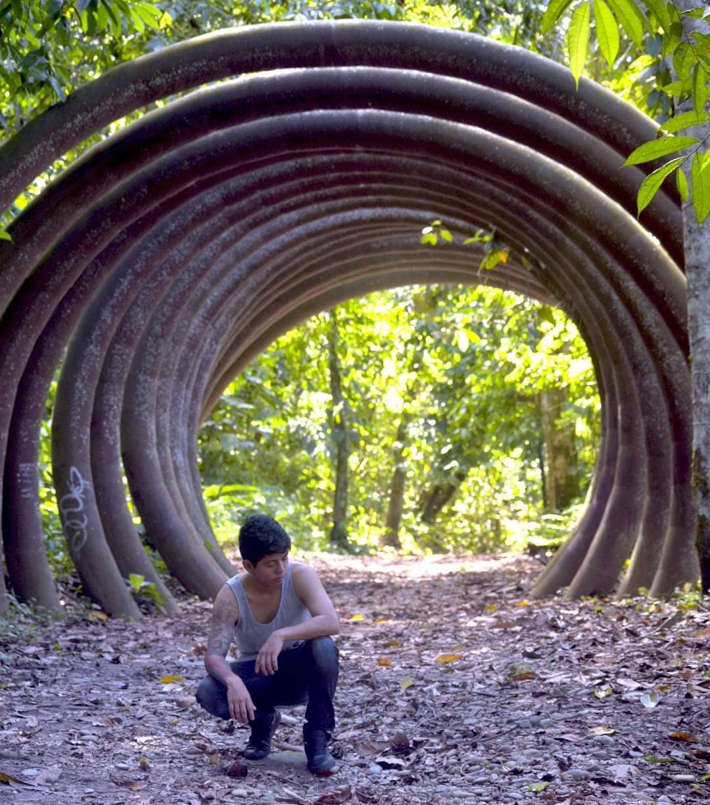
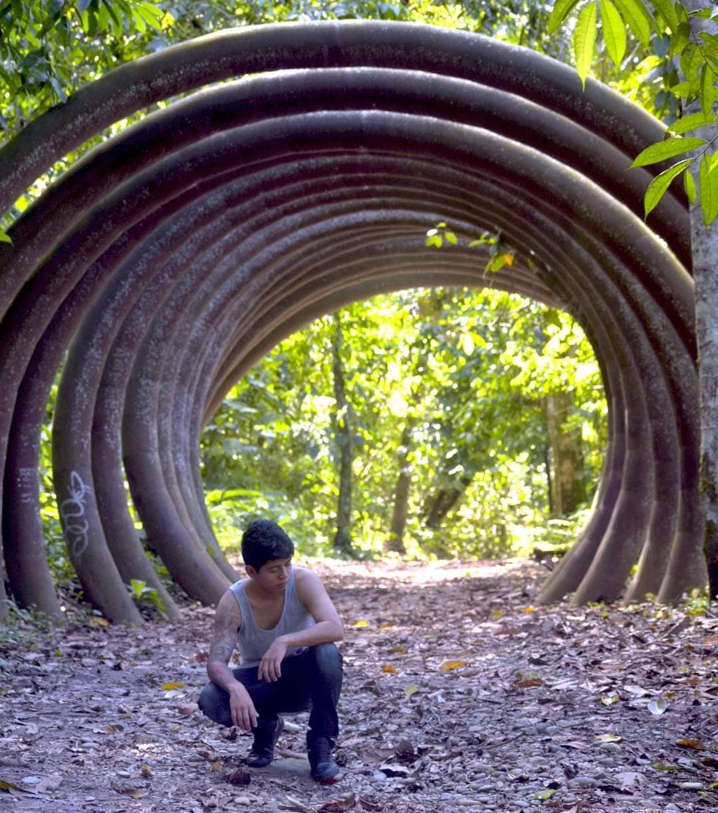

📖 Biografía
Orlando Patricio Peñaloza Abata, conocido con el seudónimo de "Xion
MC",
empezó en el rap a los 15 años de edad. Sus primeras influencias en la música fueron raperos españoles.
Nació el 9 de junio de 1997 en Ecuador. Su niñez no fue nada fácil, ya que sus padres
se separaron años después de su nacimiento.
La etapa del colegio tampoco fue la mejor, pues recibía burlas por la música que hacía en ese momento.
Sin embargo,
él ya sabía lo que quería y no le importaban las críticas. Años después, sus primeros éxitos fueron de
temáticas
de anime como Dragon Ball Z, pero por problemas de copyright casi pierde todo su
contenido en YouTube.
Al borde de la incertidumbre, decidió cambiar su enfoque a temas sentimentales, logrando grandes éxitos
como
"Todo terminó" y "Me duele tanto recordarte". Estas canciones se
convirtieron
en los pilares fundamentales de su canal. También ha lanzado otros hits como "Fuiste
tú",
"Falsas promesas" y "Amor sin fronteras".
Actualmente, sigue fusionando el anime con situaciones de la vida real, siendo uno de los primeros
artistas
en mantener esta combinación. Con más de 8 años en la música, ha superado el millón de
suscriptores en YouTube y cuenta con más de 200 canciones en su repertorio.


 
